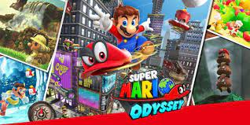

Super Mario Odysseyes un videojuego de plataformas en tres dimensiones para Nintendo Switch desarrollado y publicado por Nintendo que se lanzó el 27 de octubre de 2017. La entrega nos introduce a una nueva aventura con Mario y su nuevo aliado Cappy, un ser en forma de sombrero que le permite a Mario poseer diversos personajes y objetos, que en su vehículo aéreo la Odyssey se embarcan en una travesía visitando distintos reinos a lo largo del mundo para salvar a la Princesa Peach del matrimonio forzado que Bowser planea. Es el decimonoveno título de la serie Super Mario y el séptimo juego de plataformas en 3D de Mario Bros. La característica principal en este juego es la habilidad de portar a Cappy, este hace que Mario pueda poseer enemigos u objetos para usar sus habilidades para resolver rompecabezas y hacerte paso dentro del juego. Es un juego multijugador pero centrado más en la experiencia de un solo jugador, también soporta realidad virtual con el kit de realidad virtual de Nintendo Labo. Además, al terminar la campaña principal se puede acceder a un modo de juego extra llamado "Mundoglobo" de Luigi.
 Nintendo Switch